Hay cosas que pasan todos los días. Las vemos. Las ignoramos. Normalizamos. Pero siguen ahí. Continuar a las instrucciones.
¿ME ESCUCHAS?
Las siguientes indicaciones se aplican al continuar la caminata.
Caminar. El recorrido avanza solo y gana velocidad. No necesitas inclinar el celular para empezar.
Mirar y elegir la calle. Desliza el dedo para voltear. Si permitiste el uso del movimiento, también puedes girar físicamente el celular. En los cruces, mira hacia una calle abierta para entrar.
Acelerar. Mantén un dedo quieto sobre la calle. Al soltarlo vuelves al ritmo automático.
Escuchar. Toca una mancha roja. Los titulares flotan al empezar cada voz. Las noticias son ficticias y pueden sonar al mismo tiempo. «Repetir» vuelve a lanzar la última; «X» oculta los titulares y sus controles.
Pausar o seguir. Da dos toques rápidos sobre la calle. Las voces ya iniciadas continúan hasta terminar o hasta el corte de la reja.
Menú ☰. Puedes silenciar toda la experiencia o reiniciarla.
En computadora. Arrastra para mirar; ↑ retrocede, ↓ avanza y la barra espaciadora pausa o continúa.
Cargando la calle…
El miedo, la frustración y el enojo, son manifiesto de la injusticia; ignorarlo no lo cura, solo aplaza la acción
